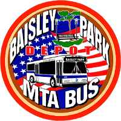

Since There are about 8 total depots in Queens, and to save space on this page, they are split up into two pieces.This is the first half.
Get to info about:Baisley Park Depot|Casey Stengel Depot|College Point Depot|Far Rockaway Depot|Jamacia Depot>|Laguardia Depot|Queens Village Depot|
 Baisley Park Depot is one of the depots that I have known that I've seen one of the first articulated(aka Accordian Buses) buses.The routes supported by baisley park are the Q64,Q110,Q111,Q112,Q113,and the Q114(which is the one that i have seen at Rosedale).
 Just like College Point depot, this depot has the least familiarity with me.However, the funny thing with this depot is that there is a route that is shared with Queens Village Depot, which is the Q20A route. the routes for the Casey Stengel Depot are the Q12, Q13, Q15, Q15A, Q16, Q20A, Q20B, Q26, Q28, Q31, Q32, Q48, and Q76. There is also the Q44 select bus service to The Bronx.
Just like College Point depot, this depot has the least familiarity with me.However, the funny thing with this depot is that there is a route that is shared with Queens Village Depot, which is the Q20A route. the routes for the Casey Stengel Depot are the Q12, Q13, Q15, Q15A, Q16, Q20A, Q20B, Q26, Q28, Q31, Q32, Q48, and Q76. There is also the Q44 select bus service to The Bronx.
 Ok,so I'm going to be frank with you, i really don't know much about this depot(and 2/4 of all of these depots), but i did see a Q23 at Corona. The routes for College Point Depot are the Q19, Q23, Q25, Q34, Q38, Q65,and Q66. College Point Depot has the most depots out of any in the Borough of Queens, with 1276 routes going to Manhattan!
Ok,so I'm going to be frank with you, i really don't know much about this depot(and 2/4 of all of these depots), but i did see a Q23 at Corona. The routes for College Point Depot are the Q19, Q23, Q25, Q34, Q38, Q65,and Q66. College Point Depot has the most depots out of any in the Borough of Queens, with 1276 routes going to Manhattan!
 These depots are a special case, mostly fro the reasons that the information found out about the two depots have the same link.The routes for the Far Rockaway Depot are the Q11,Q21,and Q22, with 4 express routes.The routes for the JFK Depot are the Q6,Q7,Q8,Q9,Q10(articulated service to JFK airport),Q37,Q40,Q41,and Q60, with the Q52 as select bus service.
These depots are a special case, mostly fro the reasons that the information found out about the two depots have the same link.The routes for the Far Rockaway Depot are the Q11,Q21,and Q22, with 4 express routes.The routes for the JFK Depot are the Q6,Q7,Q8,Q9,Q10(articulated service to JFK airport),Q37,Q40,Q41,and Q60, with the Q52 as select bus service.